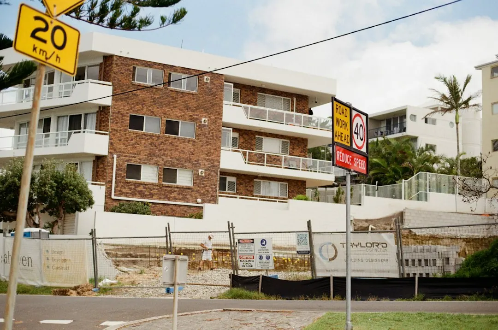

A retaining wall project in Brisbane should begin with the ground being retained, the result you want and the conditions around the site. Boulder Walls Brisbane describes six options: boulder, sandstone, concrete sleeper, timber sleeper, replacement and terraced garden walls. Before requesting a firm quote, prepare the height change, access route, nearby structures, drainage observations and approval questions. Four steps are to describe the change, show the site, discuss options and confirm the proposal.
For homeowners comparing retaining walls brisbane options, the practical decision is how the wall will hold the ground, manage water and fit the way the garden needs to be used.
Retaining Walls Brisbane Explained
Boulder Walls Brisbane frames the first decision around the job rather than a material name. A level lawn, raised garden bed, replacement of an old wall and a more usable sloping yard each create different questions. Begin with the height change, what will sit above the wall and what you want to keep around it.
Natural boulders can suit a planted-garden appearance, while sandstone blocks provide either even rows or a rougher stone finish. Concrete sleepers sit between posts, and timber sleepers create another system where the ground, drainage and future care need consideration.
- Describe whether the work is a new level, a replacement or a terraced garden.
- Note fences, paths, lawns and established planting that should remain.
- Identify driveways, buildings or other structures above the wall.
- Share approximate dimensions without treating them as a final design.
Compare wall systems by the work behind the face
Material comparisons become more useful when they include construction conditions. Boulder walls require room to place large stones and drain the ground behind them. Sandstone work may be planned around garden levels and the preferred finish. Sleeper systems depend on posts, connections, ground conditions and drainage that suit the particular job.
A replacement adds removal and disposal of the existing wall, followed by any garden repairs included in the discussion. A terraced design adds paths and several usable levels to the conversation. These differences affect the scope that needs to appear in a proposal, even when two walls appear similar from the street.
Ask for the proposed system, drainage approach and work included to be stated clearly. Comparing only the visible front of a wall can leave important site work unclear.
Access and drainage belong in the first conversation
A wide street does not establish that materials can reach the work area. Steps, narrow gates, turns and overhead obstructions may change how materials are moved. Send wider photographs showing the wall, the higher ground and the route from the street. A close-up alone cannot describe the working conditions.
Water behind a wall also needs an explicit discussion. Describe pooling, staining or soil loss you have observed, then ask what drainage the quote includes and where the water will go. The wall system, ground and lawful outlet all matter. Gaps between stones should not be treated as proof that drainage is adequate.
Nearby structures deserve the same attention. Tell the provider about a driveway, building, fence or pool fencing above or beside the proposed work. Those details can affect the proposal and whether a separate approval question needs checking.
Approval and existing-wall questions
Brisbane City Council lists conditions for work that may not need building approval, and height is only one consideration. Loads above the wall, nearby buildings or walls, and pool fencing can also matter. A licensed building certifier should check the full proposal before anyone treats it as exempt.
An existing wall can be discussed from photographs, but images do not reveal buried footings or drainage. A suitably qualified professional can check the wall and explain what remains hidden. Where removal is proposed, ask how the old wall and any temporary support will be handled.
Ask who handles design, approval, construction and necessary inspections. Put inclusions and exclusions in writing, including path protection and repairs after the work. This makes proposals easier to compare without assuming that similar-looking prices cover the same tasks.
Turn the enquiry into a useful proposal
The published enquiry process asks for a suburb, the wall being considered and how the work area can be reached. You do not need to know the final wall system before starting the discussion. Explain the problem and the result you want, then provide prepared details if they are available.
- Describe the change. Say whether the job creates a new level, replaces an old wall or changes how the yard can be used.
- Show the whole site. Include the wall area, higher ground and route from the street.
- Discuss workable options. Ask about material, access and whether a site assessment is needed before a firm quote.
- Confirm the proposal. Check the price, inclusions, responsible parties and expected start arrangements.
For another perspective on planning this type of work, see this related Brisbane retaining-wall planning guide. Keep the enquiry focused on the actual site, including access concerns, nearby structures and plans already prepared.
- Describe the change. Explain whether the job creates a new level, replaces an old wall or changes how the yard can be used.
- Show the whole site. Provide wider photographs, approximate dimensions, the higher ground and the route from the street.
- Discuss workable options. Ask about material, access and whether a site assessment is needed before a firm quote.
- Confirm the proposal. Check the price, inclusions, exclusions, responsibilities and expected start arrangements.
| Need | Possible direction | Information to prepare |
|---|---|---|
| Raised or planted garden | Boulder or sandstone wall | Garden levels, space for materials and drainage questions |
| Sleeper construction | Concrete or timber sleepers | Posts, connections, ground and future care |
| Old wall problem | Replacement assessment | Existing condition, removal, disposal and garden repairs |
| Sloping yard use | Terraced garden walls | Desired levels, paths, access and drainage |
Common questions
When might building approval need to be checked? Height is not the only consideration. Loads above the wall, nearby buildings or walls, and pool fencing can also matter, so a licensed building certifier should check the full proposal before it is treated as exempt.
What should a drainage question cover? Ask what drainage the quote includes and where the water will go. Describe pooling, staining or soil loss, and consider the wall system, ground and lawful outlet together.
Can photographs establish what is hidden in an old wall? Photographs can begin the discussion, but they cannot show buried footings or drainage. A suitably qualified professional can check the wall and explain what remains hidden.
What should be included in a retaining-wall quote? Ask who handles design, approval, construction and necessary inspections. Confirm material, access, removal or disposal where relevant, drainage, path protection, garden repairs, inclusions and exclusions in writing.
This guide covers material choices, site access, drainage, approval questions and quote preparation for retaining-wall projects in Brisbane.